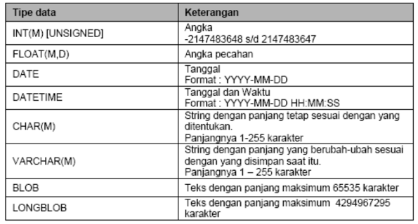
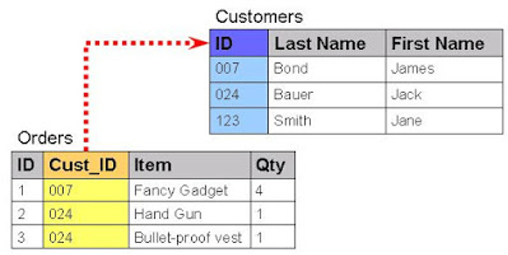
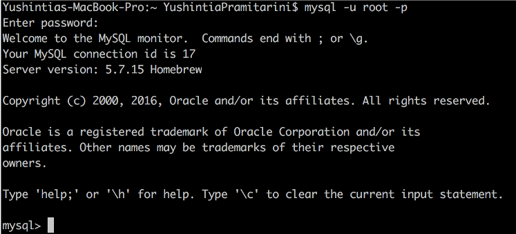
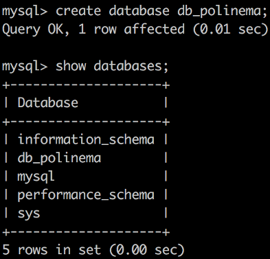
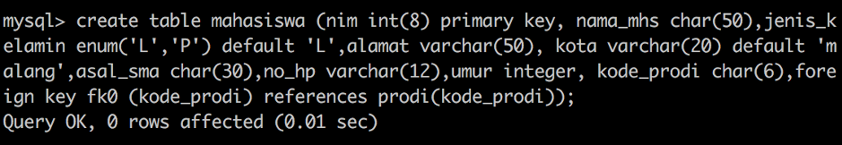
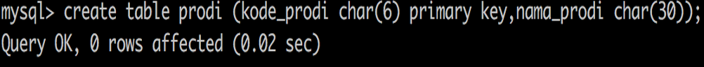
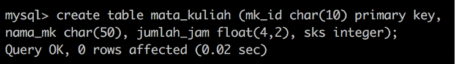
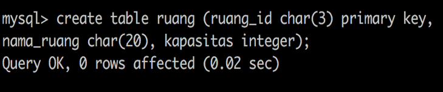
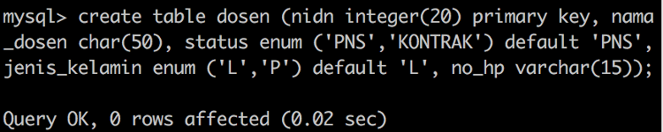

Jobsheet-10: MySQL (Data Definition Language (DDL))
Topik
Dasar MySQL dan Data Definition Language (DDL)
Mahasiswa diharapkan dapat:
- Memahami dasar-dasar MySQL
- Membuat database dan tabel dengan menerapkan data definition language (DDL)
- Memahami penggunaan perintah-perintah untuk mendefinisikan atribut-atribut database, tabel, field, maupun batasan-batasan terhadap suatu atribut dan hubungan antar tabel
Pendahuluan
Basis Data: Himpunan kelompok data (arsip) yang saling berhubungan, yang diorganisasi sedemikan rupa, sehingga kelak dapat dimanfaatkan kembali dengan cepat.
Bahasa Basis Data
DBMS merupakan perantara antara user dengan database. Cara komunikasi diatur dalam suatu bahasa khusus yang ditetapkan oleh DBMS. Misalnya SQL,dBase,QUEL, dsb. Ada beberapa bentuk bahasa sql, namun yang biasa digunakan adalah 2 bentuk bahasa sql yaitu DDL dan DML
Data Definition Language (DDL) >> digunakan dalam membuat tabel baru, indeks, mengubah tabel, menentukan struktur tabel, dsb
Data Manipulation Language (DML) >> digunakan dalam memanipulasi dan pengambilan data pada database. Manipulasi data dapat mencakup :
- Pemanggilan data yang tersimpan dalam database (query)
- Penyisipan/penambahan data baru ke database
- Penghapusan data dari database
- Pengubahan data pada database
Dasar-Dasar MySQL
Dalam bahasa SQL pada umumnya informasi tersimpan dalam tabel-tabel yang secara logik merupakan struktur dua dimensi terdiri dari baris (row atau record) dan kolom (column atau field). Sedangkan dalam sebuah database dapat terdiri dari beberapa table. Beberapa tipe data dalam MySQL yang sering dipakai:

Data Definition Language (DDL) merupakan sekumpulan set perintah yang bertujuan untuk mendefinisikan atribut-atribut database, tabel, atribut kolom (field), maupun batasan-batsan terhadap suatu atribut dan relasi/ hubungan antar tabel. Yang termasuk dalam kelompok perintah DDL adalah :
CreateAlterDrop
CREATE merupakan perintah DDL yang digunakan untuk membuat database maupun tabel. Nama database maupun tabel tidak boleh mengandung spasi (space). Nama database tidak boleh sama antar database.
ALTER merupakan perintah DDL yang digunakan untuk mengubah nama/struktur tabel
DROP merupakan perintah DDL yang digunakan untuk menghapus database ataupun tabel
a. Database
Perintah untuk membuat database sebagai berikut :
CREATE DATABASE namadatabase;Contoh :
CREATE DATABASE db_polinema;Untuk menampilkan daftar nama database yang terdapat dalam database server pada MySQL menggunakan perintah :
SHOW DATABASES;Sebelum membuat suatu tabel yang akan digunakan untuk menyimpan data, terlebih dahulu harus memilih/mengaktifkan salah satu database sebagai database aktif yang akan digunakan untuk menyimpan beberapa tabel yang akan dibuat. Untuk memilih/mengaktifkan salah satu database menggunakan perintah berikut :
USE namadatabase;Sebagai contoh, database db_polinema yang akan digunakan / diaktifkan maka perintahnya sebagai berikut:
USE db_polinema;Perintah yang berfungsi untuk menghapus database maupun tabel adalah perintah DROP. Untuk menggunakan perintah tersebut, berikut penulisan perintahnya :
DROP DATABASE namadatabase;Misalnya database db_polinema yang akan dihapus maka perintahnya sebagai berikut :
DROP DATABASE db_polinema;
b. Tabel
Membuat Tabel
Nama tabel tidak boleh mengandung spasi (space). Ketika membuat tabel, ada beberapa yang harus dideklarasikan dalam pembuatannya yaitu antara lain meliputi : nama tabel, nama kolom (field), tipe data dari field dan panjang data. Perintah yang digunakan untuk membuat tabel secara umum adalah sebagai berikut :
CREATE TABLE namatabel (field1 typedata1, field2 typedata2);Contoh berikut ini adalah syntax untuk membuat tabel mahasiswa :`CREATE TABLE mahasiswa (nim CHAR (20),nama_mhs CHAR(50),umur INT, PRIMARY KEY(nim));`Menampilkan tabel Untuk menampilkan daftar nama tabel yang terdapat dalam database yang sedang aktif/digunakan menggunakan perintah :
SHOW TABLES;Menampilkan deskripsi atribut tabel
Untuk menampilkan deskripsi atribut-atribut yang terdapat pada suatu tabel dengan menggunakan perintah :
DESC namatabel;Contoh:
DESC mahasiswa;Menghapus Tabel
Untuk menghapus Tabel perintahnya sama dengan untuk menghapus database yaitu dengan menggunakan perintah DROP. Perintah yang digunakan adalah :
DROP TABLE namatabel;Misalnya yang akan dihapus adalah tabel mahasiswa :
DROP TABLE mahasiswa;Mengisi Data Untuk memasukkan sebuah baris (record) kedalam tabel MySQL adalah sebagai berikut :
INSERT INTO table [(column1, column2,...) VALUES (value1, value2,...)];Contoh :
Insert into mahasiswa (nim,nama,umur) values (‘001’,’imam’,20);Mendefinisikan Null/Not Null
Null ataupun Not Null merupakan pernyataan yang digunakan untuk membuat kolom yang akan dibuat boleh kosong (Null) atau tidak boleh kosong (Not Null). Ketika pada kolom tabel tidak di set, maka secara default akan bernilai Null (boleh kosong). Untuk mendefinisikannya maka perintah yang akan digunakan adalah :
CREATE TABLE mahasiswa (nim CHAR (20) NOT NULL, nama_mhs CHAR (50) NOT NULL, umur INT, PRIMARY KEY (nim));Mendefinisikan Nilai Default Nilai default merupakan nilai yang diberikan secara otomatis oleh sistem untuk suatu kolom ketika terjadi penambahan baris baru, sementara nilai pada kolom tersebut tidak diisi oleh pengguna.
Contoh :
CREATE TABLE mahasiswa (nim CHAR (20), nama-mhs CHAR (50), umur INT DEFAULT 0, PRIMARY KEY (nim));Mendefinisikan PRIMARY KEY pada Tabel
Suatu keharusan dalam suatu tabel adalag harus memiliki satu kolom yang dijadikan sebagai perwakilan dari tabel tersebut. Pembuatan perwakilan tabel ini berfungsi untuk melakukan hubungan / relasional dengan tabel lain. Bentuk perwakilan ini dalam database disebut sebagai PRIMARY KEY yang aturan pembuatannya adalah sebagai berikut :
- Satu tabel bisa memiliki 2 primary key
- Nama kolom kunci tidak digunakan pada kolom lain satu tabel
- Nama kolom kunci tidak boleh sama dengan kolom kunci yang ada pada tabel lain
Bentuk kolom kunci harus diset NOT NULL
Terdapat tiga cara untuk mendefinisikan primary key. Berikut ini perintah yang digunakan :
CREATE TABLE mahasiswa (nim CHAR (20), nama_mhs CHAR (50), umur INT, PRIMARY KEY (nim));Atau
CREATE TABLE mahasiswa (nim CHAR (20) NOT NULL PRIMARY KEY, nama_mhs CHAR (50), umur INT);Atau
ALTER TABLE mahasiswa ADD CONSTRAINT namaconstraint PRIMARY KEY(namakolom);
Menghapus PRIMARY KEY pada tabel
Cara 1: Jika primary key dibuat menggunakan alter table:
ALTER TABLE namatabel DROP CONSRTRAINT namaconstraint;Cara 2: Jika primary key dibuat melalui create table:
ALTER TABLE namatable DROP PRIMARY KEY;Menambah kolom baru pada tabel
Untuk menambah kolom baru pada suatu tabel bisa menggunakan perintah sebagai berikut :
ALTER TABLE namatabel ADD fieldbaru typedata(lebar);Namatabel merupakan nama tabel yang akan ditambahkan kolomnya. Filedbaru merupakan nama kolom yang akan ditambahkan, typedata(lebar) merupakan type data dan lebar data yang akan ditambahkan. Contohnya menambahkan kolom telepon pada tabel mahasiswa setelah kolom umur:
ALTER TABLE mahasiswa ADD COLUMN telepon CHAR (15) AFTER umur;Mengubah Tipe Data atau Lebar Kolom pada Tabel
Perintah yang digunakan adalah :
ALTER TABLE namatabel MODIFY COLUMN field type(lebar);Contoh :
ALTER TABLE mahasiswa MODIFY COLUMN telepon(12);Mengubah Nama Kolom(Field) Perintah yang digunakan adalah :
ALTER TABLE namatabel CHANGE COLUMN namakolomlama namakolombaru typedatabaru(lebarbaru);Contoh :
ALTER TABLE mahasiswa CHANGE COLUMN telepon phone CHAR(25);Menghapus Kolom pada Tabel
Perintah yang digunakan adalah :
ALTER TABLE namatabel DROP COLUMN namakolom;Contoh :
ALTER TABLE mahasiswa DROP COLUMN phone;Mendefinisikan Foreign Key
Foreign Key adalah salah satu jenis constraint yang digunakan untuk merelasikan antar dua tabel atau lebih. Foreign Key digunakan pada tabel kedua (detail) yang mereferensi ke tabel utama yang mempunyai constraint primary key.

Pada gambar diatas, kolom Cust_ID pada tabel Orders berperan sebagai foreign key yang mereferensi ke tabel Customers pada kolom ID.
ALTER TABLE namatabel ADD FOREIGN KEY namafield REFERENCES namatabelreferensi (namafieldreferensi);
Praktikum
- Buka prompt jalankan perintah berikut ini :
C:\>Program Files\xampp\mysql\bin>mysql –u root –p (enter) - Buatlah sebuah database dengan nama
db_polinema - Buatlah beberapa tabel dalam database tersebut sesuai dengan kriteria berikut:
shell script nim Int (8) Primary Key nama_mhs Char (50) jenis_kelamin Enum (‘L’,’P’) DEFAULT ‘L’ alamat Varchar (50) kota Varchar (20) DEFAULT ‘MALANG’ asal_sma Char (30) no_hp Varchar (12) umur INT kode_prodi Char (6) foreign key fk0 (kode_prodi) referensces prodi (kode_prodi) - Tabel prodi
shell script Field Type Data kode_prodi Char (6) Primary Key nama_prodi Char (30) - Tabel mata_kuliah
shell script Field Type Data mk_id Char (10) Primary Key nama_mk Char (50) jumlah_jam Float (4,2) sks Integer - Tabel ruang
shell script Field Type Data ruang_id Char (3) Primary Key nama_ruang Char (20) Kapasitas Integer - Tabel dosen
shell script Field Type Data nidn integer (20) Primary Key nama_dosen Char (50) status Enum (‘PNS’,’KONTRAK’) Default ‘PNS’ jenis_kelamin Enum (‘L’,’P’) Default ‘L’ no_hp Varchar (15) - Soal, Tambahkan sebuah kolom agama (varchar(10)) pada tabel mahasiswa sebagai kolom terakhir
Catat : Buat Screenshot dari perintah yang anda ketikkan
- Soal, Tambahkan kolom alamat(varchar(50)) pada tabel dosen sebagai kolom terakhir
Catat : Buat Screenshot dari perintah yang anda ketikkan
- Soal, Lakukan insert data ke dalam tabel-tabel yang ada pada pada database db_polinema sesuai dengan field, tipe data dan panjang datanya
Catat : Buat Screenshot dari perintah yang anda ketikkan
- Soal, Tampilkan semua tabel yang ada didalam database db_polinema
Catat : Buat Screenshot dari perintah yang anda ketikkan
- Soal, Tampilkan semua isi tabel yang ada didalam tabel mahasiswa
Catat : Buat Screenshot dari perintah yang anda ketikkan
- Soal, Tampilkan struktur(metadata) tabel mahasiswa
Catat : Buat Screenshot dari perintah yang anda ketikkan
- Soal, hilangkan kolom asal_sma yang terdapat didalam tabel mahasiswa
Catat : Buat Screenshot dari perintah yang anda ketikkan
Tugas
Buatlah basis data Akademik dengan data sebagai berikut :
shell script No_Mhs Nama_mhs Jurusan Kd_MK Nama_mk Kd_Dosen Nm_Dosen nilai 1921001 Aminah MI MI350 Basis Data B104 Ati 85 1921001 Budiman MI MI465 Pemrograman B105 Dita 87 1921002 Carina MI MI465 Pemrograman B105 Dita 85 1921003 Della TI TI201 Mobile C102 Leo 78 1921004 Firda TI TI201 Mobile C102 Leo 80- deskripsikan struktur data dari table-tabel berikut serta isikan datanya:
- Tabel Mahasiswa {No_Mhs, Nama_mhs}
- Tabel Mata_Kuliah {Kd_MK, Nama_MK}
- Tabel nilai {No_Mhs, Kode_MK}
- tambahkan kolom Jurusan pada tabel Mahasiswa di kolom terakhir
- tambahkan kolom Kode Dosen pada tabel Mata_Kuliah
- tambahkan kolom nilai pada tabel nilai serta berikanlah kunci foreign key
- tambahkan Tabel Dosen dengan atributnya Kd_Dosen dan Nama Dosen
- tampilkan semua data yang ada pada tiap tabel
- deskripsikan struktur data dari table-tabel berikut serta isikan datanya:
Buatlah basis data Pegawai yang terdiri dari tabel sebagai berikut :
shell script Noproyek NamaProyek Nopegawai NamaPegawai Golongan BesarGaji NP001 BRR Peg01 Anton A 1.000.000 NP001 BRR Peg02 Paula B 900.000 NP001 BRR Peg06 Koko C 750.000 NP002 PEMDA Peg01 Anton A 1.000.000 NP002 PEMDA Peg12 Sita B 900.000 NP002 PEMDA Peg14 Yusni B 900.000 NP003 CBR Peg02 Paula B 900.000 NP003 CBR Peg03 Daniar C 750.000 NP003 CBR Peg04 Lubis C 750.000 NP004 ASK Peg07 Keni B 900.000 NP004 ASK Peg08 Sofi B 900.000 NP004 ASK Peg06 Yuni C 750.000 NP005 OB Peg15 Udin D 500.000 NP005 OB Peg16 Didit D 500.000 NP005 OB Peg17 Dani D 500.000- Deskripsikan struktur data dari table-tabel berikut serta isikan datanya:
- Table Pegawai {Nopegawai, NamaPegawai}
- Tabel Golongan {Golongan}
- Tabel Proyek {Noproyek]
- Tabel Proyekpegawai {Noproyek}
- Tambahkan kolom Golongan pada tabel Pegawai di kolom terakhir
- Tambahkan kolom BesarGaji pada tabel Golongan di kolom terakhir
- Tambahkan kolom NamaProyek pada table Proyek
- Tambahkan kolom NoPegawai pada table Proyekpegawai serta berikanlah kunci foreign key
- Tampilkan semua data yang ada pada tiap tabel
- Deskripsikan struktur data dari table-tabel berikut serta isikan datanya: